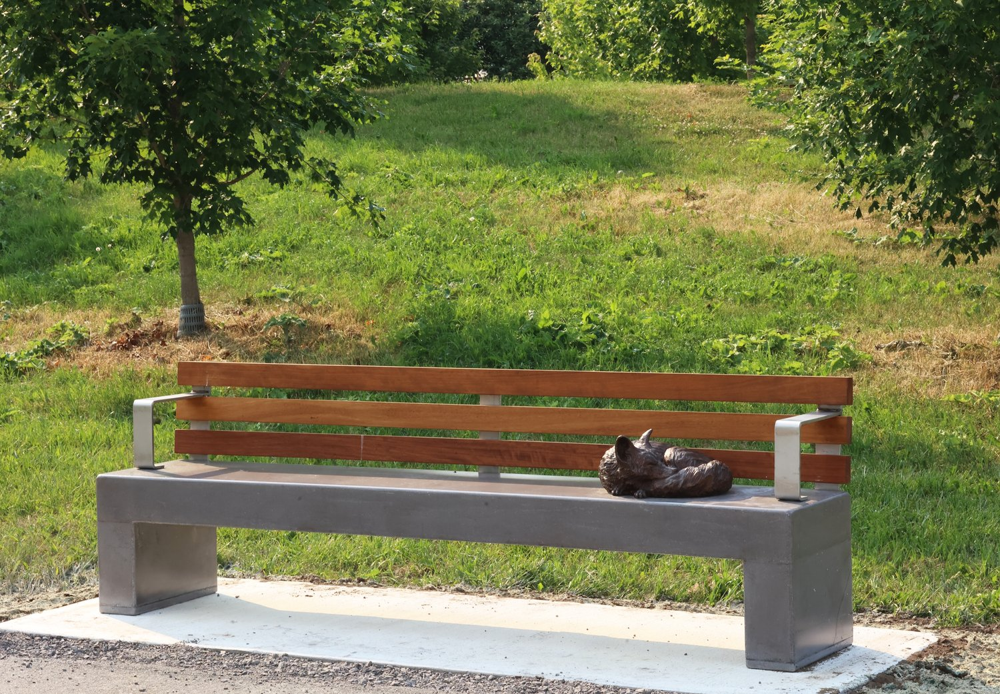

Urbanization and Nature
A Conceptual Challenge
At the heart of A State of Rest lies a quiet, persistent question: how do organic lifeforms exist—visibly, vulnerably—within spaces built for efficiency, speed, and human utility? This public artwork becomes a lens through which to examine the uneasy cohabitation of nature and city, inviting viewers to reflect on what it means to "rest" in an environment that rarely stops moving.

Framed stillness
Each sculpture in the installation rests not in a field or forest, but on a bench—an object designed for human use, repetition, and control. This staging choice creates a visual paradox: the animals appear relaxed, yet their stillness is framed by rigid, engineered forms. These benches are not passive supports—they are active agents in the visual language of the work. Their hard edges and industrial materials act as a kind of containment, subtly limiting where and how nature is permitted to exist in the city.
In this context, rest becomes complicated. The sculptures do not sprawl or stretch freely; they are posed, contained, offered to the public in a manner that is orderly and non-threatening. This raises a subtle, unsettling question: is the calm we’re seeing genuine, or is it curated?
Composure and Control
By placing wild animals in an environment governed by infrastructure, the work reflects how urbanization reshapes not only ecosystems, but our expectations of nature itself. The animals are rendered with stunning realism, but their placement on uniformly spaced benches reflects a distinctly human logic—organized, composed, and controlled.
This composure stands in contrast to the unpredictability of wildlife. There is no messiness here, no interruption to the flow of the city. The work invites us to consider what kinds of nature we are comfortable with: the curated, quiet, contained kind—or the unpredictable, inconvenient kind that resists integration?
Rather than presenting animals simply as displaced, the installation presents them as absorbed—softened and stilled to better fit their new surroundings. The question is not just where we place nature, but how we reshape it in order to let it remain.